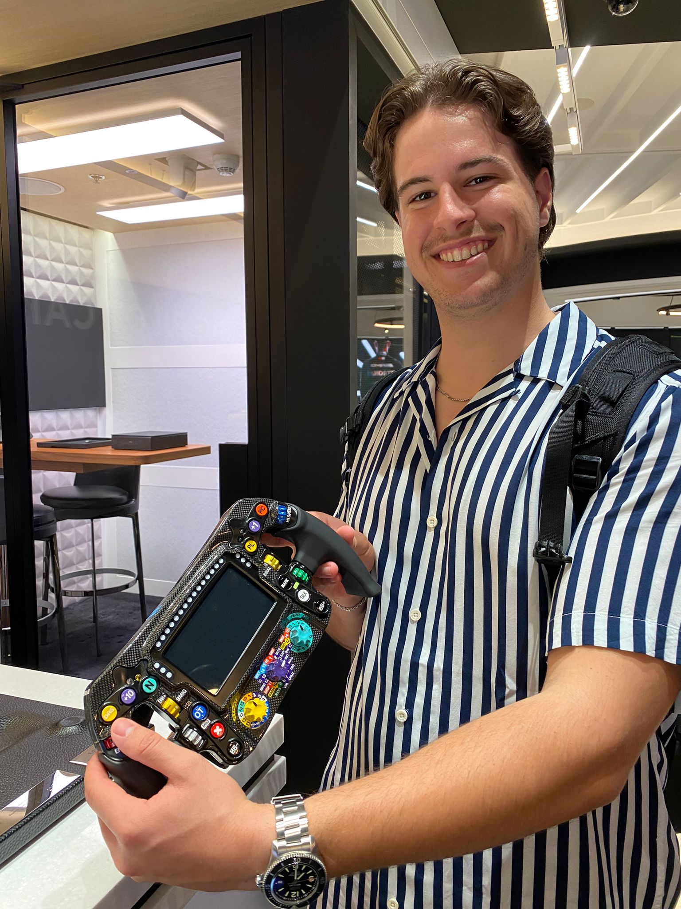
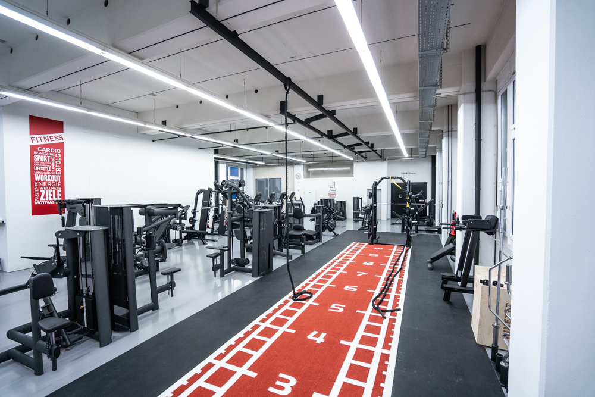
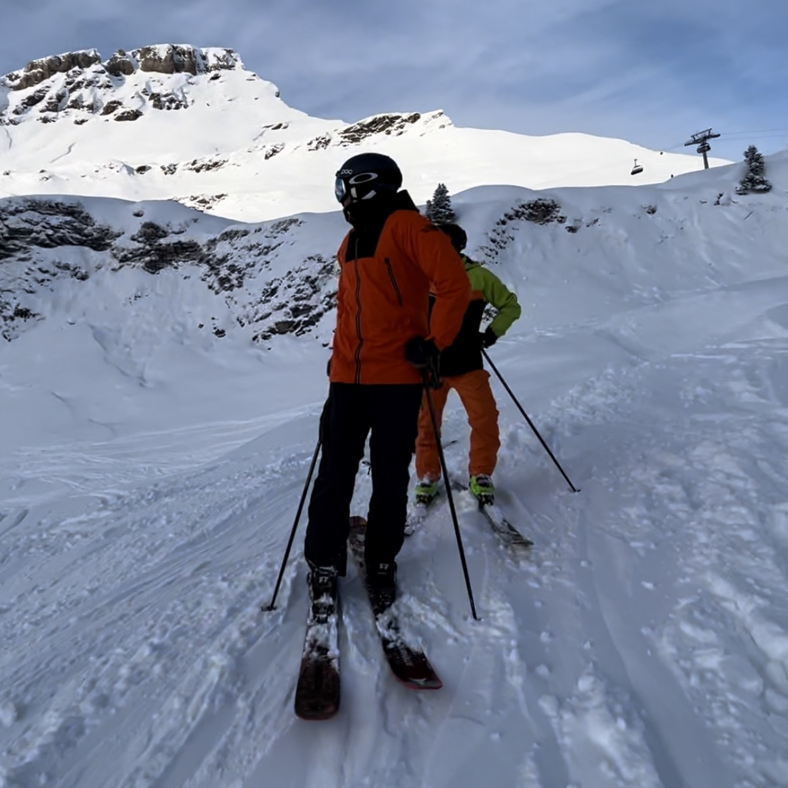
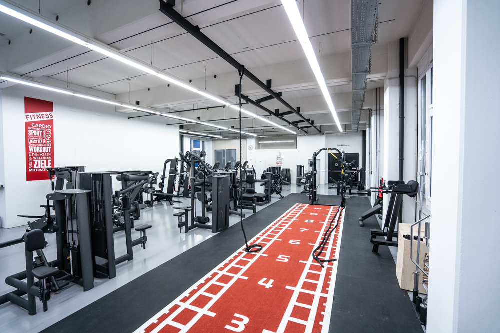
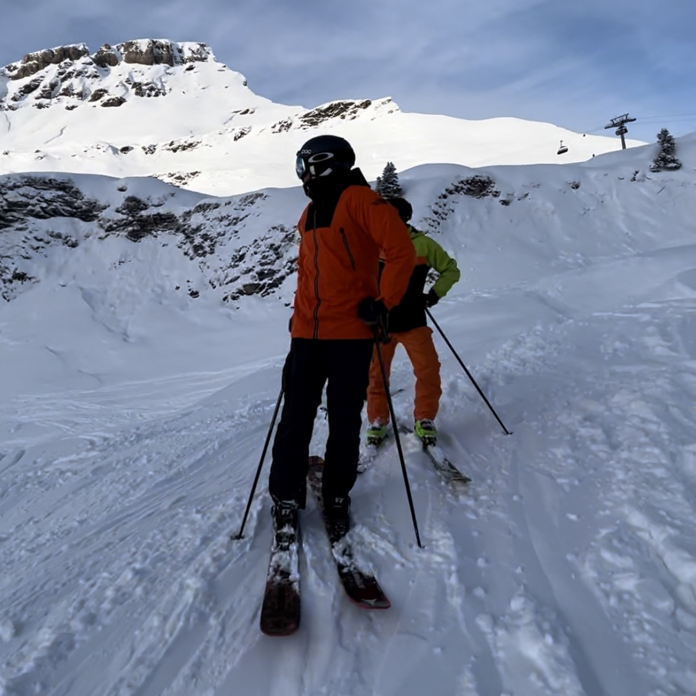

Intro
Ich bin Noah Wieschmann, 22 Jahre jung und komme die nächsten Tage bei Euch schnuppern. Damit Ihr vorher ein wenig mehr über mich Bescheid wisst, habe ich diese Seite erstellt.
About Me
Ich wohne in Lufingen in der Nähe des Flughafen Kloten.
Im 2022 habe ich die 4 jährige Lehre als Polymechaniker EFZ bei der Firma Diener AG in Embrach erfolgreich abgeschlossen.
Danach konnte ich im Lehrbetrieb weiterarbeiten. Im Sommer 2022 absolvierte ich die RS als Übermittlungssoldat in Emmen.
Hobbies


 



Einer meiner grossen Interessen widme ich den Autos und Motorrädern. Diese Faszination verbinde ich mit einem weiteren Hobby, nämlich die Fotografie.
Am meisten fotografiere ich meine eigenen Autos, mein Motorrad oder auch Autos von Freunden und Bekannten, die mich anfragen.
Ich bin oft im Fitness anzutreffen, denn Kraftsport begleitet mich jede Woche im Alltag.
Im Winter fahre ich Ski oder Snowboard.
Future
Nach der RS war mir schnell klar, dass ich mich beruflich weiterbilden möchte.
Als mir ein Freund erzählte, dass er Programmieren lernt, war ich echt verblüfft, da er vorher nichts mit Informatik zu tun hatte. Er erklärte mir, dass er Online lernt einfache Webseiten zu programmieren.
Selber techbegeistert, befasste ich mich damit und es hat mich sofort gecatcht. Schnell war mir klar, dass ich beruflich in diesem Bereich Fuss fassen möchte. Nach ein wenig Recherche bin ich auf die Erwachsenenlehre gestossen, welche den Quereinstieg in diese Richtung ermöglicht.
Mein Ziel ist es, mich beruflich in diese Richtung weiterzubilden und im Sommer 2024 eine Erwachsenenlehre als Informatiker in Applikationsentwicklung zu beginnen.
Vielen Dank, dass Ihr mir einen Einblick in das UBS Cardcenter ermöglicht. Ich bin sehr gespannt und freue mich auf die kommenden Tage.